Digital
Clear numerals in an instrument-style panel. One glance and you’re ready.
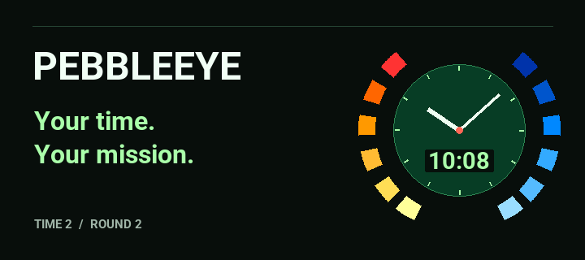
A classic spy-watch display, reimagined for Pebble Time 2 and Round 2. Pick your dial. Pick your colour. Make it yours.
Pebble Time 2Pebble Round 2

Clear numerals in an instrument-style panel. One glance and you’re ready.

A full-size dial and clean hands, framed by the signature segmented ring.
Full-size hands with digital time over the dial. The best of both views.
Every palette, captured on both watches. Each also works in Digital, Analogue and Hybrid modes.
mission green
warm gold
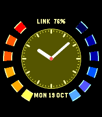
cool blue
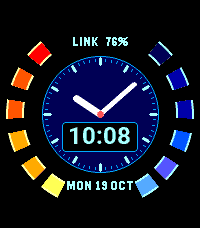
violet and rose
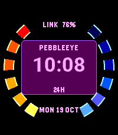
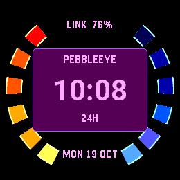
deep teal
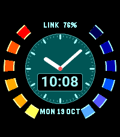
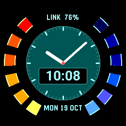
warm copper
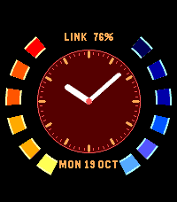
quiet monochrome
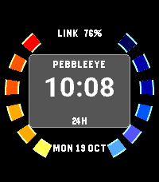
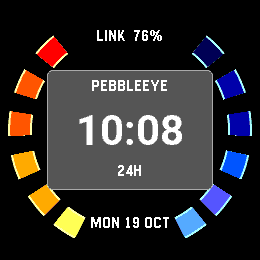
soft coral
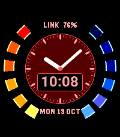
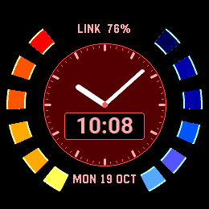
Choose a date format, show or hide watch status, and add a seconds hand while the backlight is on. Undo changes or save when it feels right.
Native layouts for Time 2 and Round 2. Your watch’s 12-hour or 24-hour preference. Seconds off by default, with normal timekeeping updates once a minute.
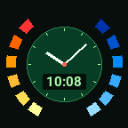
Small icon · 80×80 · Large icon · 144×144 · Banner · 720×320